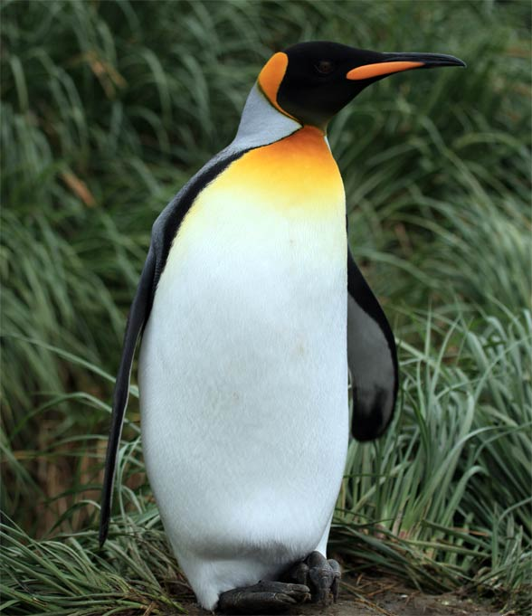

Pingwin

Uzupełnić żywność dla pingwinów. 1. Ustalenie potrzebnej ilości i planu żywienia 2. Wybór dostawcy 3. Złożenie zamówienia 4. Przygotowanie do dostawy (inspekcja jakości, przygotowanie przechowania) 5. Dodanie dodatkowych odżywek jeśli konieczne Wykonawca - Igor Dzienis